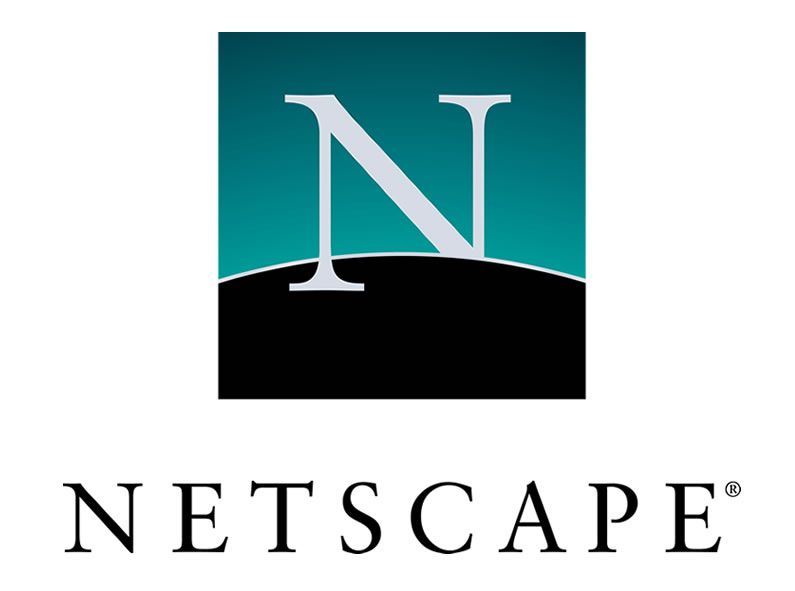

Netscape Navigator fue un navegador web, el primer producto comercial de la compañía Netscape Communications creada por Marc Andreessen cuando se encontraba en el National Center for Supercomputing Applications de la Universidad de Illinois en Urbana-Champaign. Netscape fue el primer navegador comercial.
